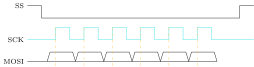

Construction
Lines: SCK (master clock), MOSI (master out, slave in), MISO (master in, slave out, tri-stated by unselected slaves), SS (one per slave, low = selected).
Modes:
| mode | CPOL (idle SCK) | CPHA | data sampled on | data changes on |
|---|---|---|---|---|
| 0 | 0 | 0 | rising edge | falling edge |
| 1 | 0 | 1 | falling edge | rising edge |
| 2 | 1 | 0 | falling edge | rising edge |
| 3 | 1 | 1 | rising edge | falling edge |
With CPHA = 0 the first bit must be on the line when SS falls, before the first edge.
Master implementation: everything clocked by the system clock; SCK is generated by a divider, not used as a clock. An FSM: IDLE (SS high) → SELECT (SS low, put MSB on MOSI) → TRANSFER (on the sampling edge shift MISO in, on the other shift MOSI out, count  bits) →
bits) → DONE (SS high, raise ready).
Picture

Mode 0: data changes on falling edges and is sampled on rising ones (dashed).
Intuition
Two shift registers joined in a ring: each clock moves the ring one bit, and after eight clocks master and slave have swapped bytes.
Pitfall
There is no acknowledgement or standard framing: if master and slave disagree on the mode or word length, the data are shifted by a bit or garbled, silently.